Chapter 18 GAMs: Generalized Additive Models
So far, we have learned ways to model continuous, logical, and count response variables as functions of quantitative and categorical predictors. We started with linear models - where both the response and predictor variables are quantitative and the relationship between them is linear. What about nonlinear relationships?
So far, we have considered…
- Categorical predictor variables. Making use of indicator variables for (all but one of the) categories, we can model a situation where each value of the predictor variable has a different effect on the response. But…
- How many categories?
- What about periodicity?
- GLMs. In logistic, Poisson, etc. regression, the action of the link function results in a relationship between the predictors and the response variable that is linear on the scale of the link function ( = scale of the RHS of the equation), but non-linear on the scale of the response variables (LHS). But…
- Nonlinear, but monotonic
18.1 Non-linear, non-monotonic relationships
It’s not true that all interesting predictor-response relationships are linear or monotonic. One example is in some data on bat migration: how does the probability of bats leaving on their migratory journey depend on air humidity?
 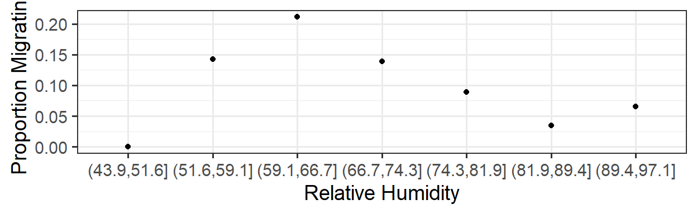
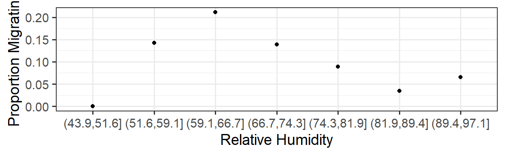
Another dataset (our example for the day) – ozone levels as a function of solar radiation (rad), temperature (temp) and wind speed (wind):
oz <- read.csv('http://geog.uoregon.edu/GeogR/data/csv/ozone.csv')
gf_point(ozone ~ rad, data=oz, alpha=0.4)
gf_point(ozone ~ temp, data=oz, alpha=0.4)
gf_point(ozone ~ wind, data=oz, alpha=0.4)


18.2 Smooth terms
We can fit a model where the relationship between the response and the predictor is a ``smooth" – no linearity or monotonicity requirement.
18.2.1 Basis functions
- A smooth term is constructed as the sum of several parts, or basis functions. Each of these functions has a relatively simple shape, but scaled and added together, they can produce nearly any ``wiggly" shape.
- Increasing the dimension of the basis (more functions added together) can allow more wiggliness.
- Goal: allow enough wiggliness to fit the data well, without overfitting (smooth goes through every point in the data, or follows ``trends" that are spurious)
We will fit smooth models to data using the function gam() from the package mgcv. It includes many options for basis functions (types of smooths) - see ?mgcv::gam or [https://rsconnect.calvin.edu:3939/content/28/] for details.
18.3 Fitting GAMs
An excellent resource: https://converged.yt/mgcv-workshop/.
18.3.1 Choosing model formulation
Which terms should be modelled as smooth terms? Explore the data!
- Pros:
- Cons:
18.3.2 Model formula
Let’s fit a simple GAM for the ozone data as a function of radiation, temperature and wind. Note the s() function for specifying a smooth, which takes as input:
- a variable name (or more than one, for advanced users)
kbs
How do we choose? For some exploration, see: [https://rsconnect.calvin.edu:3939/content/28/].
We can also fit the model and smooths by different methods and with options:
method = 'GCV.Cp'method = 'REML'method = 'ML'select = TRUE(orFALSE)
require(mgcv)
oz.gam <- gam(ozone ~ s(rad, k=5, bs='tp') +
s(wind, k=5, bs='tp') +
s(temp, k=5, bs='tp'), data=oz,
method='REML', select=TRUE)
par(mar=c(4,4,2,2))
plot(oz.gam)
summary(oz.gam)##
## Family: gaussian
## Link function: identity
##
## Formula:
## ozone ~ s(rad, k = 5, bs = "tp") + s(wind, k = 5, bs = "tp") +
## s(temp, k = 5, bs = "tp")
##
## Parametric coefficients:
## Estimate Std. Error t value Pr(>|t|)
## (Intercept) 42.10 1.65 25.4 <2e-16 ***
## ---
## Signif. codes: 0 '***' 0.001 '**' 0.01 '*' 0.05 '.' 0.1 ' ' 1
##
## Approximate significance of smooth terms:
## edf Ref.df F p-value
## s(rad) 1.66 4 3.26 0.00047 ***
## s(wind) 2.91 4 13.78 3.0e-11 ***
## s(temp) 2.37 4 14.46 8.5e-12 ***
## ---
## Signif. codes: 0 '***' 0.001 '**' 0.01 '*' 0.05 '.' 0.1 ' ' 1
##
## R-sq.(adj) = 0.726 Deviance explained = 74.3%
## -REML = 482.89 Scale est. = 303.89 n = 111 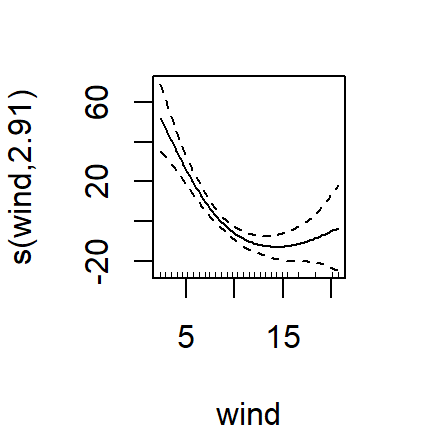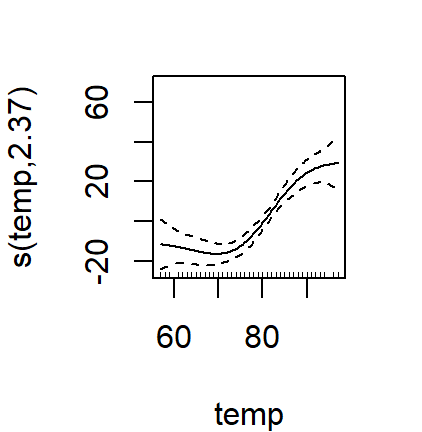
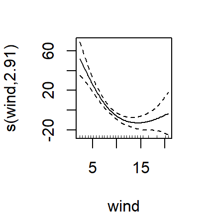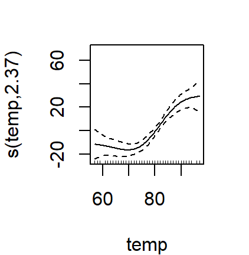
18.4 Model Assessment
In addition to what you already know (…which all still holds, except linearity expectation!) mgcv has some nice model checking functions built in.
##
## Method: REML Optimizer: outer newton
## full convergence after 6 iterations.
## Gradient range [-0.000192,1.33e-05]
## (score 483 & scale 304).
## Hessian positive definite, eigenvalue range [4.35e-05,55.1].
## Model rank = 13 / 13
##
## Basis dimension (k) checking results. Low p-value (k-index<1) may
## indicate that k is too low, especially if edf is close to k'.
##
## k' edf k-index p-value
## s(rad) 4.00 1.66 0.95 0.27
## s(wind) 4.00 2.91 0.96 0.22
## s(temp) 4.00 2.37 0.78 0.01 **
## ---
## Signif. codes: 0 '***' 0.001 '**' 0.01 '*' 0.05 '.' 0.1 ' ' 1 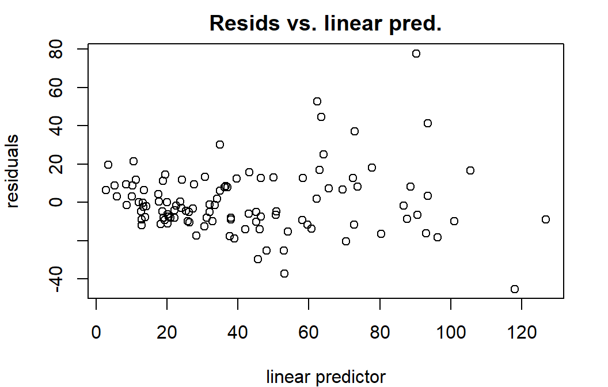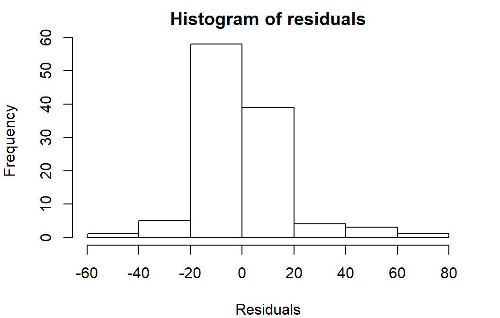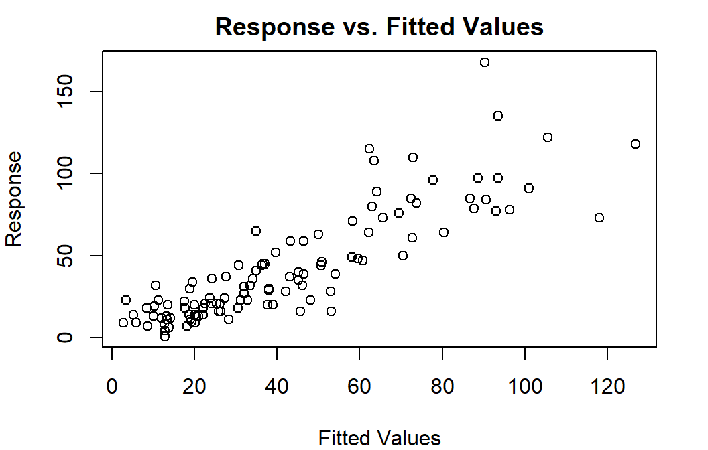
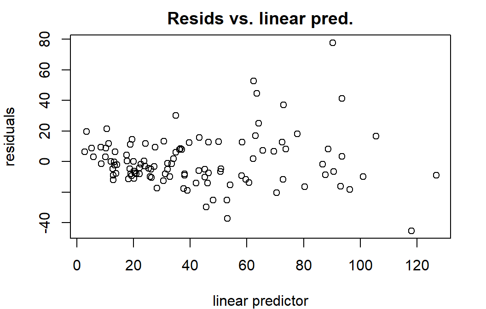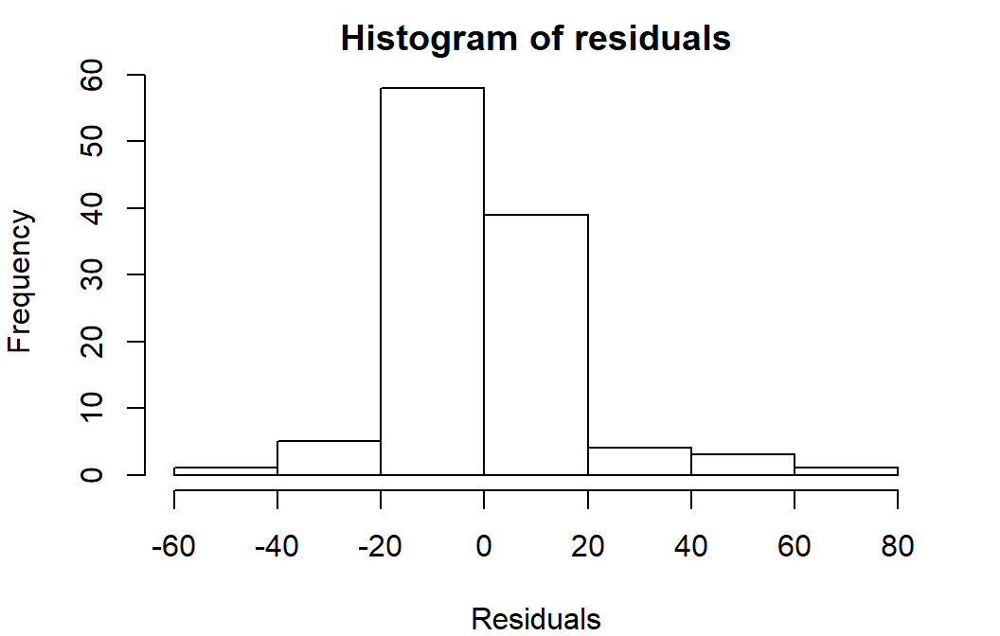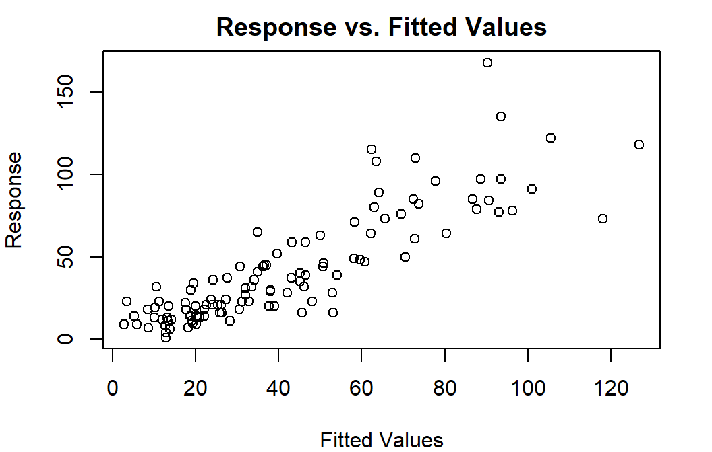
18.4.1 Concurvity
Like collinearity and multicollinearity, but for smooths…values of 0 indicate no problem, and 1 a huge problem (total lack of identifiability – same information in multiple predictors).
Overall, does the model have problems with concurvity?
## para s(rad) s(wind) s(temp)
## worst 8.11e-20 0.280 0.344 0.426
## observed 8.11e-20 0.202 0.318 0.357
## estimate 8.11e-20 0.172 0.238 0.343Or alternatively, which specific pairs of terms cause problems?
## $worst
## para s(rad) s(wind) s(temp)
## para 1.00e+00 4.14e-28 7.60e-20 1.72e-28
## s(rad) 3.92e-28 1.00e+00 1.24e-01 2.69e-01
## s(wind) 7.60e-20 1.24e-01 1.00e+00 3.24e-01
## s(temp) 1.78e-28 2.69e-01 3.24e-01 1.00e+00
##
## $observed
## para s(rad) s(wind) s(temp)
## para 1.00e+00 1.15e-30 5.47e-23 2.84e-30
## s(rad) 3.92e-28 1.00e+00 1.03e-01 1.60e-01
## s(wind) 7.60e-20 5.43e-02 1.00e+00 2.97e-01
## s(temp) 1.78e-28 1.95e-01 3.00e-01 1.00e+00
##
## $estimate
## para s(rad) s(wind) s(temp)
## para 1.00e+00 2.39e-30 8.37e-22 7.83e-31
## s(rad) 3.92e-28 1.00e+00 7.78e-02 2.00e-01
## s(wind) 7.60e-20 3.93e-02 1.00e+00 2.45e-01
## s(temp) 1.78e-28 1.62e-01 2.20e-01 1.00e+0018.5 Model Selection
18.5.1 Shrinkage and Penalties
With GAMs, in a sense, some model selection is (or can be) done during model fitting - what smooth is best? Or is the relationship a line? A flat line? Using shrinkage basis or including select=TRUE allows for this.
18.5.2 P-value selection
Cautions: p-values are approximate! Successfulness of the procedure best when fitting method is: ML (1st choice), REML (2nd choice).
Interpretation as usual. Note that anova() (not Anova()) works here - especially for GAMs, it does not do sequential tests; and Anova() doesn’t handle GAMs.
18.5.3 Information criteria
- Conditional/Approximate - bias
- Fitting method:
- REML-based IC scores can be used to compare models with different random effects but not different predictors. (IF
select = TRUEand using a shrinkage basis.) - ML-based IC scores can be used to compare models with different fixed effects (regular predictors) and different
family, but not different random effects
- REML-based IC scores can be used to compare models with different random effects but not different predictors. (IF
require(MuMIn)
oz.ml <- update(oz.gam, method='ML', na.action='na.fail')
head(dredge(oz.ml, rank='AIC'),2)## Global model call: gam(formula = ozone ~ s(rad, k = 5, bs = "tp") + s(wind, k = 5,
## bs = "tp") + s(temp, k = 5, bs = "tp"), data = oz, na.action = "na.fail",
## method = "ML", select = TRUE)
## ---
## Model selection table
## (Int) s(rad,5,"tp") s(tmp,5,"tp") s(wnd,5,"tp") df logLik AIC delta
## 8 42.1 + + + 10 -471 962 0.00
## 7 42.1 + + 8 -477 971 9.32
## weight
## 8 0.991
## 7 0.009
## Models ranked by AIC(x)